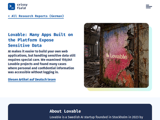
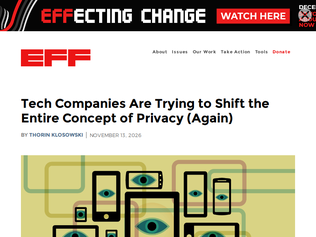

"Reading this thread makes me realize that seemingly no one has heard the basic, mundane case for why Nvidia would want to do so much "circular financing" as a matter of totally normal business strategy. This may not be the whole story, but it's worth understanding.Because of bottlenecks in the supply chain, Nvidia knows it is going to sell 100% of its inventory. They could raise prices quite a bit more, but then their only customers would be hyperscalers (building competing chips) and possibly OpenAI and Anthropic. Nvidia is willing to forgo present day profits for the strategic value of keeping its customer base diverse and promoting the network effects of e.g. CUDA. Instead of quoting a lower price per GPU to neoclouds and startups, they finance purchases of chips, but the two are roughly equivalent (financing means Nvidia takes on more risk, but has more upside and locks in future demand). It is in their commercial interest to have many competing buyers of their chips.Obviously this creates fun mechanisms for fraud and wacky accounting (and I'm agnostic as to whether that's happening here), but it's worth knowing about the boring/obvious story before donning your tinfoil hat."
"This is third source reporting. WSJ does the original, Wccftech reports that WSJ reports, now Techpowerup reports what Wccftech reports about WSJ reporting.ORGINAL is the best. It tells completely different story better (not a weird twist where CEO trying to increase sales and price of their product is suspect)Before His Ouster, Jensen Huang Belittled the Executive Replacing Him --- Interim CEO Colette Kress has questioned some Huang dealmaking. He called her ‘a deer in the headlights.’https://wallhop.io/https://www.wsj.com/tech/jensen-huang-col...?https://wallhop.io/https://www.wsj.com/tech/jensen-huang-col...?"
"I thought we knew a year ago that nVidia was doing circular finance?https://www.theguardian.com/technology/2025/dec/28/nvidia-in..."
"Starship is, essentially, Space Shuttle done right: fully reusable booster without solid boosters (avoids Challenger disaster) and orbiter stacked on top instead of on the side (avoid Columbia disaster).The original designs for the Space Shuttle had the booster (with wings!) return to the launch site, but the cost for two new crewed vehicles was too large, so they scaled it back to the compromised version.Even more revolutionary, compared to Shuttle, Starship is built on an assembly line. They can build a booster ever 4 weeks and a ship every 2 weeks.The future we were promised in the 1970s is about to become real."
"If the heat shield holds up then this changes everything. Next step is double catch and re-flying the same ships and catching again, then payloads to orbit become significantly cheaper opening a new era in space flight."
"Huge congratulations to the engineering team on this one! It's been quite interesting to watch the evolution of Starship. Had they put another couple of tonnes of propellant and oxidizer on the Booster they might have caught both of them. It is still unclear to me what the final mass fraction to orbit will work out to be, but something that is 100% re-usable is better than something 60% reusable[1].[1] Estimate of Falcon 9's booster + fairings being 60% (by cost, not by mass) of the launch package."

"Hi, I’m the author of this blog post. I submitted it to HN two weeks ago, but it didn’t gain much traction, so I’m glad to see it resubmitted. Happy to answer any questions, though I think the situation is fairly self-explanatory."
"Igor here, Head of Security at Lovable. Thanks to the Crissy Field team for their work. The root cause in these apps was insufficent Row-Level Security, which is exactly what our scanning is built to catch. We scan every app automatically before publish and offer a deeper SAST scan, both free for all users. When we flag findings, users can select “Fix” and Lovable will help resolve them. They can also enable auto-fix, which resolves security findings in the background, and block publishing entirely when there are critical findings.When an app has end users, security is a key part of the product. That’s why we keep investing in making security tools better and easier to use, taking on as much of the security load as we can and fixing more issues automatically.I personally believe that making security accessible is what leads to making software accessible. We’re committed to both.You can read more about our approach: https://lovable.dev/blog/find-it-fix-it-ship-it"
"The part people are ignoring is Supabase's culpability in this matter: https://github.com/orgs/supabase/discussions/4547This was supposedly fixed on October 30, but there are reports floating around that for existing projects, the defaults still apply.Lovable deserves some heat for using this, but this was a choice that was made by Supabase many years ago to support making it easier to onboard potential customers, a deliberate tradeoff of less onboarding pain for less security."

"Here’s a question I have: every professional meeting I now attend is being recorded & uploaded by seen and unseen AI guests. Even 1:1 conversations between direct managers and colleagues.That’s a world I don’t want to endorse, but it’s seemingly impossible to opt out and stay employed. Is there anything that I can do to minimize my exposure? Has anyone made it a norm to say “transcription isn’t needed for this meeting so I would like everyone to turn off AI notetaker before we proceed?”"
"UN Human right article 12"Article 12No one shall be subjected to arbitrary interference with his privacy, family, home or correspondence, nor to attacks upon his honour and reputation. Everyone has the right to the protection of the law against such interference or attacks." https://www.un.org/en/about-us/universal-declaration-of-huma..."arbitrary interference with his privacy"That is tech companies does not have right to private data through data fusion. We humans collectivly have the right to privacy."
"I haven't tried live-transcribing glasses, but done well they ought to be transformative for people like me: the deaf and nearly deaf.No reason they can't use a local model not saving or exporting anything, but still, once you have this system you're one if-statement away from retention. If you want these devices banned, are you going to ban open-source prosthetics?Say we develop Neuralink-style brain prostheses to the point everyone wants one. Will we ban memory assists then? The copyright lobby will smile at that one.Yes, let's fight for privacy, just... watch where you're swinging."
"I see a few people saying they couldn’t get used to CGA, that it was absurd, or worse than no graphics at all.I can relate to that. But as I’ve aged I’ve appreciated just how much was done with less back. I mean that literally: we couldn’t afford a computer so my dad would haul home his work computer each weekend. We’d call BBS’ on it, print stuff. Play shareware games. It pissed my mom off because it took up half the dinner table. But my brother learned to code this way too.So later on when my friends got EGA and VGA, CGA meant “poor.”Fast forward many years and I have kids and were in better financial circumstances than my dad and mom back then. My kids have MacBooks. One of their friends was over one night and was visibly embarrassed that all she had was the school assigned Chromebook. She and my daughter were doing homework and her friend said that she wished her family could afford better laptops.I didn’t want to embarrass her but then next morning after I made pancakes and I was sitting at the table I was like hey let’s take a look at these Chromebooks (we had an old one sitting around) and the three of us sat there and in about an hour and a half they’d put together a very simple farm game in the spirit of Stardew Valley on PICO-8.Point being, we live in a world where especially with AI, it’s easy to think we can do everything. And it can feel like that, which means that when you can’t, you feel worse that you can’t because it would appear everyone else is doing amazing things with no limits.But maybe we need more limits on things. Maybe that 4 color palette forced devs and artists to be creative back then in ways that make things better for everyone."
"Every time I see CGA graphics in cyan, magenta, black and white it reminds me of my youth and how 'cold' it felt at the time to see those graphics, I could never really get used to it. When EGA/VGA graphics came along it felt so warm and in my experience games really started to come to life.Respect for the graphics artists in general for that time to be able to make something out of almost nothing, four colors or less and/or black and white low resolution."
"Beautiful. I love the CGA interface.When I see monkey island I always think of the Amiga copy protection on monkey island 2. The game was on something like 13 floppies that you had to keep switching but there was only super hard copy protection on disk 7 or something so you'd get part way through the game before getting scuppered. (I was only about 10 years old)."
"It's because the hard part of making software is not coding, but deciding what's worth building (even with LLMs), appropriately modelling the problem and designing the solution (at a conceptual, architectural level). And there has been strictly zero progress on this and IMO this isn't something LLMs are strucurally capable of doing."
"Blow argues software development hasn't advanced much since the early 2000s. As a game developer, I want to offer a counter point.In the last 3 years, there have been a lot more indie games of far higher quality than we used to get. I'm thinking of the RTS space right now. The Scouring for example. We went from having nobody but Blizzard able to make something that complex to several games with outstanding performance and complexity, often with their own custom game engines that are not only working but working better than I remember wc3/sc2 working at launch.I don't know how much of a role AI is playing in those games, but I think the performance and complexity of indie games is shooting up and we are seeing very, very small teams make things that large teams struggled with in the past. Honestly, I think indie studios are outperforming AAA in most ways besides spend and length and art budget --and yet, it's the indies who are making their own game engines these days, isn't it?(btw, we have to also admit that many of these game engine builders look to blow for inspiration (to carmack too), and their architectures are not what you'll find at typical saas companies. Game coding is complicated in a really fun way I didn't get doing plumbing on web projects, speaking for myself)"
"I'm a senior game developer at a large company. I work on the core of an extremely widely used game engine.Jon Blow doesn't have sufficient experience in using LLMs to talk about it.This is evidenced by his focus on individual anecdotes on AIs failure to deliver something.I would love to talk to him about this as I have fairly concrete evidence of the insane productivity gains one can get with smart AI usage.Also would love to hear Ryan J Fleury talk about Tim Sweeneys statements on LLMs.How long until RADDBG is primarily used by Claude? How long until Ryan is told he must support this? How long until he claims he was never against it?"
"Total KDE fan and that's all I run at home. It's an interesting study also in desktop environment and software written in C++ and just how hard it is to get something that works for most people. Mistakes, corrections, building the basic blocks like Qt in the early days and keeping a bunch of people with differing cultures / tastes / backgrounds/needs motivated to make it better every day - fascinating achievement.Thank you KDE folks - I contribute in terms of bug reports and attempts at fixes sometimes but this time I am signing up for a monthly donation - I encourage people to do what they can to keep a good thing going! https://kde.org/donate/"
"KDE is amazing. Outstanding performance, outstanding design, and endlessly configurable. But the most amazing thing of all is that you've achieved this while competing against teams like Microsoft's or Apple's, which spend millions of euros and are made up of thousands of people.Congratulations, team. Here's to 30 more years."
"I am a bit prod of having seen the original post looking for volunteers to build a Kool Desktop Environment. I was obsessively reading Usenet groups at the time. And I remember there were quite early betas published, I did not run them at first, but I remember much enthusiasm about it. So I feel familiar with the beginnings although I never participated in the project development-wise. All the way up to KDE 4 I was quite close to the project as a user. But since KDE 4 was so unstable and buggy, I left it around that time. This is also around the time when the documentary makes a big jump ahead chronologically.I feel the documentary explains less what happened the last 10-15 years. I recall Trolltech and Qt underwent a series of acquisitions. How is KDE and Qt developed now? Who are the main contributors and sponsors? Any big backers? This information I felt missing."
"The stuff about Gabelsberger shorthand sounds ludicrous to me. My father would write notes in a custom version of it until his death 2020.Officially (i.e. in schools teaching stenography, back in the day) it was long ago replaced by "unified German shorthand" (Deutsche Einheitskurzschrift IIRC), but he always considered Gabelsberger to be superior.Well, maybe he too was one of the 6 people in the world who could read it (or yes, maybe that was hyperbole, I'm not sure) :D"
"From what historians of science tell us, Gödel was in any case an absolute perfectionist who mostly published work that was bulletproof. His enormous body of notes surely contained some very sharp insights, but it is unlikely that he would have produced illuminating, conclusive new theorems by chance and without realizing it. He was a very harsh reviewer of his own work."
"I can't remember the exact quote but I believe I read that Gödel confided to Einstein (in their walks in Princeton) on his deep worry of his work being forgotten. If only he knew."
"A much better alternative to this would be to for more terminal emulators to implement overstrike mode (DECSET 20, as available on the VK100). That way you could just draw border characters over existing text cells to achieve the same thing.Unfortunately mintty is the only terminal emulator I'm aware of which supports overstrike [0], as this would open up a world of new possibilities for TUI apps if more widely supported.[0] https://github.com/mintty/mintty/wiki/CtrlSeqs#overstrike"
"I love this work and everything else Ratatui does but I have to ask: if you're changing the terminal protocol and the terminal itself to do this, why not do something more ambitious; a full monospaced information-dense UI framework, a terminal designed for user interfaces, rather than one designed to replicate the limitations of dumb terminals?"
"This is pretty cool but this does feel like we are just reinventing another GUI display at this point.I don't generally like TUI's and think one gets more flexibility with raw text interfaces and being able to glue things together is more important then them looking nice. I think less fancy out put is better to be honest."
"What is really impressive about this project and llama.cpp as well is that they keep finding new ways to speed up the code on the same hardware. Every time I upgrade (once a month or so) there is usually a 5 to 10% speed boost.edit: Just to verify: I had planned to upgrade today, ran my usual benchmark prior and after and the runtime went from 4:22 to 3:59. That's a really long prompt (50K tokens) so prefill is a good chunk of that and the rest is spent on token generation."
"Awesome! ggml and llama.cpp are the Linux of the AI world. Driving local inference one bit at a time.Wishing you unlimited power and may you never see a day of low battery. Respect and Love. Keep it up."
"Long time llama.cpp user (and user of other ggml based AI programs) running on my crappy AMD card that only supports vulkan and it's usable thanks to GGML and llama.cpp, great program great project."


![Preview of 'KDE: The documentary [video]'](default_50496976.png)


Nvidia allegedly engineered scarcity by funding AI startups to buy its GPUs
"Reading this thread makes me realize that seemingly no one has heard the basic, mundane case for why Nvidia would want to do so much "circular financing" as a matter of totally normal business strategy. This may not be the whole story, but it's worth understanding.Because of bottlenecks in the supply chain, Nvidia knows it is going to sell 100% of its inventory. They could raise prices quite a bit more, but then their only customers would be hyperscalers (building competing chips) and possibly OpenAI and Anthropic. Nvidia is willing to forgo present day profits for the strategic value of keeping its customer base diverse and promoting the network effects of e.g. CUDA. Instead of quoting a lower price per GPU to neoclouds and startups, they finance purchases of chips, but the two are roughly equivalent (financing means Nvidia takes on more risk, but has more upside and locks in future demand). It is in their commercial interest to have many competing buyers of their chips.Obviously this creates fun mechanisms for fraud and wacky accounting (and I'm agnostic as to whether that's happening here), but it's worth knowing about the boring/obvious story before donning your tinfoil hat."
"This is third source reporting. WSJ does the original, Wccftech reports that WSJ reports, now Techpowerup reports what Wccftech reports about WSJ reporting.ORGINAL is the best. It tells completely different story better (not a weird twist where CEO trying to increase sales and price of their product is suspect)Before His Ouster, Jensen Huang Belittled the Executive Replacing Him --- Interim CEO Colette Kress has questioned some Huang dealmaking. He called her ‘a deer in the headlights.’https://wallhop.io/https://www.wsj.com/tech/jensen-huang-col...?https://wallhop.io/https://www.wsj.com/tech/jensen-huang-col...?"
"I thought we knew a year ago that nVidia was doing circular finance?https://www.theguardian.com/technology/2025/dec/28/nvidia-in..."